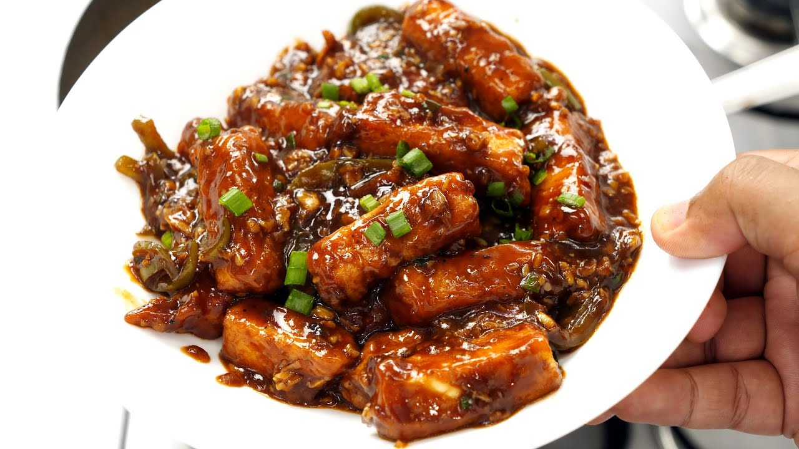

Paneer Manchurian is a delectable Indo-Chinese dish featuring crispy paneer cubes coated in a spicy, tangy sauce. It's a popular choice for a starter or as a main dish and is loved for its savory and flavorful taste.
Ingredients
- 300g Paneer, cut into cubes
- 2 tbsp Cornflour
- 1 tbsp All-Purpose Flour
- 1 tbsp Soy Sauce
- 1 tbsp Vinegar
- 2 tbsp Tomato Ketchup
- 1 tbsp Red Chili Sauce
- 1 tsp Ginger Garlic Paste
- 1 small Onion, chopped
- 1 small Capsicum, chopped
- 2-3 Green Chilies, slit
- 2 tbsp Spring Onions, chopped
- Oil for frying
- Salt to taste
Step-by-Step Instructions
- Coat the paneer cubes with cornflour and all-purpose flour. Deep fry until golden brown. Set aside.
- In a pan, heat oil and sauté chopped onions, capsicum, and green chilies until they soften.
- Add soy sauce, vinegar, tomato ketchup, and red chili sauce. Mix well.
- Combine the fried paneer cubes with the sauce and toss gently to coat.
- Garnish with spring onions and serve hot.